Clienti e Progetti



PROFILO
Creativo autodidatta e problem solver, con un approccio versatile che spazia dalla produzione video alla musica. Ho sviluppato una solida esperienza nel campo del videomaking e del color grading, lavorando su progetti complessi con un'attenzione meticolosa ai dettagli. Innovazione e indipendenza sono al centro del mio metodo di lavoro, sempre orientato a risolvere problemi e a superare le aspettative.
ISTRUZIONE
Perito Industriale Capotecnico - Elettronica e Telecomunicazioni 2013/14 Istituto Superiore Statale Majorana - Giorgi, Genova, GE
ESPERIENZA
Addetto alle vendite part-time, Timberland; Genova, Fiumara
Responsabile di incrementare le vendite e gestire l'organizzazione del magazzino.
Content Creator, Contest Telecom Italia; Genova
Partecipazione al Contest Video di Telecom Italia, con oltre creativi in gara, classificandomi al ° posto. Ho creato un breve spot sull'ecologia, interamente scritto, diretto e girato in modo indipendente, con colonna sonora originale composta da me, e realizzato a budget zero.
UI Designer, Rafting United; Morgex, Valle d’Aosta
Aggiornamento e modernizzazione delle componenti grafiche di siti internet per aziende di rafting, utilizzando strumenti come Photoshop e WordPress per la creazione di template e il fotoritocco delle immagini di archivio.
Videomaker, Content Creator, Universal Music Group Italia; Milano
Direzione del videoclip di esordio di Luca Chikovani con oltre . visualizzazioni su YouTube. Collaborazione con Sofia Viscardi e gestione completa del progetto, dalla regia alla post-produzione.
Direttore della Fotografia, Warner Music Italia; Abruzzo/Liguria –
Direzione della fotografia per il videoclip "Amore WiFi" di Benji & Fede. Il video ha raggiunto oltre milioni di visualizzazioni, consolidando il mio ruolo nell'industria musicale italiana.
Content Creator, ShowReel/Studio/NewCo; Milano –
Attraverso le agenzie di comunicazione indicate, ho collaborato a progetti per numerosi brand di alto profilo, tra cui Nike, Diadora, Coca-Cola, Giorgio Armani, Philipp Plein, Enjoy, TIM, LinkedIn, Glovo, Google, Mac Cosmetics, X Factor e il Festival di Sanremo. Il mio ruolo ha incluso la creazione di contenuti digitali.
Regista Videoclip, Warner Music Italia; Milano/Forte dei Marmi –
Regia del videoclip "Mi Drogherò" del pre-esordiente Irama, con milioni di visualizzazioni. Gestione di tutte le fasi di produzione, dalla regia alla postproduzione.
Regista Videoclip, Warner Music Italia/Apple Music; Roma –
Regia del videoclip "Giovani" di Irama, realizzato in esclusiva per Apple Music. La principale sfida è stata la perdita della location poche ore prima delle riprese, richiedendo la creazione di un nuovo concept in tempi brevissimi, utilizzando location e props di fortuna. Grazie alle competenze acquisite in regia, gestione della luce, movimenti di camera e color grading, sono riuscito a improvvisare sul set e a consegnare un prodotto di qualità superiore, rispettando le scadenze e superando le aspettative del team.
Regista Videoclip, Warner Music Italia; Roma –
Direzione del videoclip "Bella e Rovinata", che ha superato milioni di visualizzazioni e attirato l'attenzione di Dolce & Gabbana.
Regista Videoclip, Sony Music Italia/Greenpeace; Londra/Islanda –
Collaborazione con Greenpeace per un progetto video con Chiara Galiazzo, realizzato in Islanda. Utilizzo di tecnologie innovative come l'iPhone Pro per creare un video d'impatto con mezzi limitati.
Produttore Musicale, DMNDS/Dance Fruits Music; Milano/Olanda – /
Collaborazione con Andrea Blanco, portando il progetto DMNDS a oltre milioni di ascoltatori mensili, e ottenendo vari dischi d'oro e di platino.
Fonico, Post-produzione Audio, Color Grading e Color Correction, Church’s/Prada; Northampton –
Responsabile dell'acquisizione, montaggio e sincronizzazione audio per il video promozionale "ASMR" della fabbrica di scarpe Prada. Gestione della traccia audio per ricreare un'esperienza sonora coinvolgente. Ottimizzazione e uniformità del look del video promozionale, con particolare attenzione a far risaltare i colori dei prodotti, assicurando fedeltà ai colori reali delle scarpe.
LINGUE
- Italiano
- Portoghese
- Inglese
PUNTI DI FORZA
- Problem Solving
- Adattabilità
- Gestione del Tempo e Stress
- Leadership e Teamwork
- Creatività e Innovazione
- Autodidatta